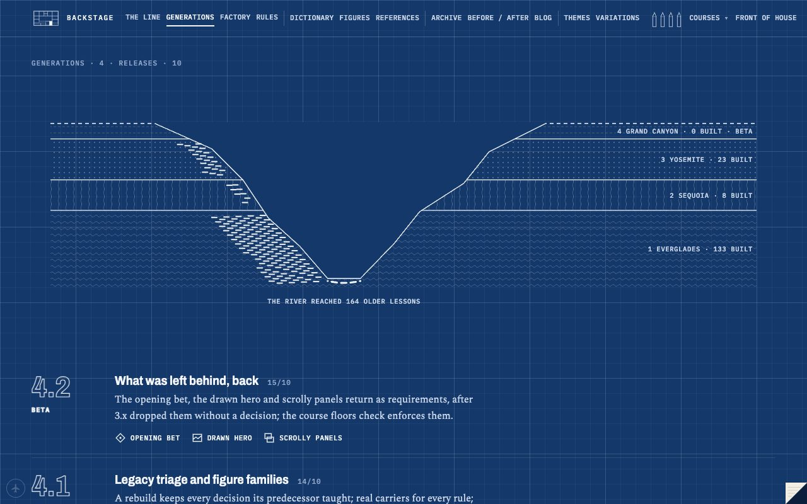
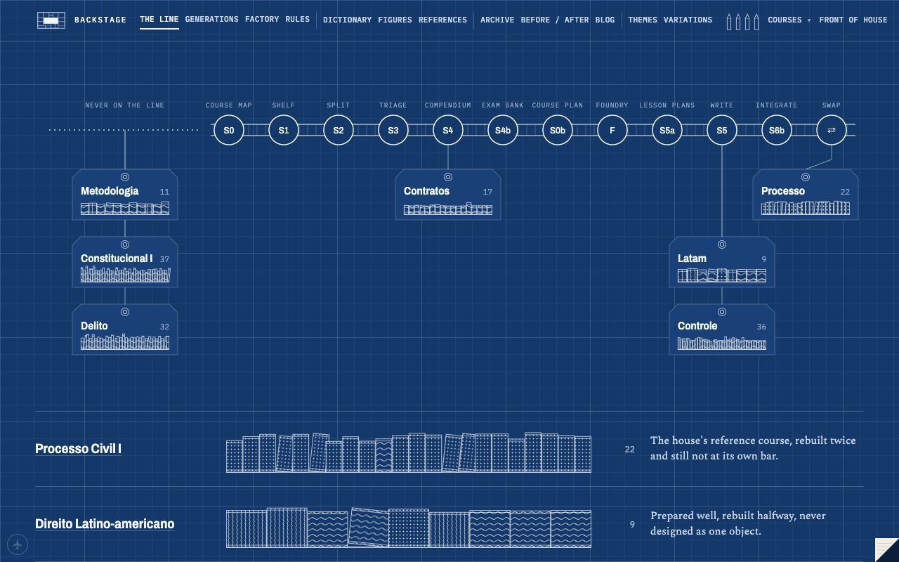
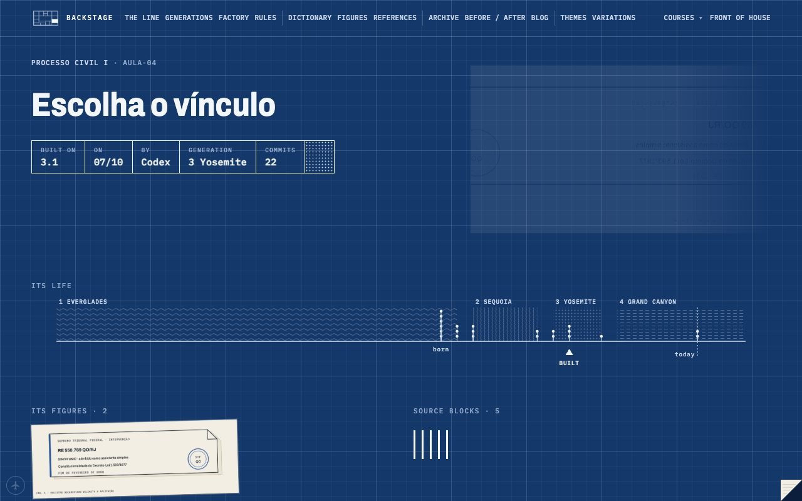
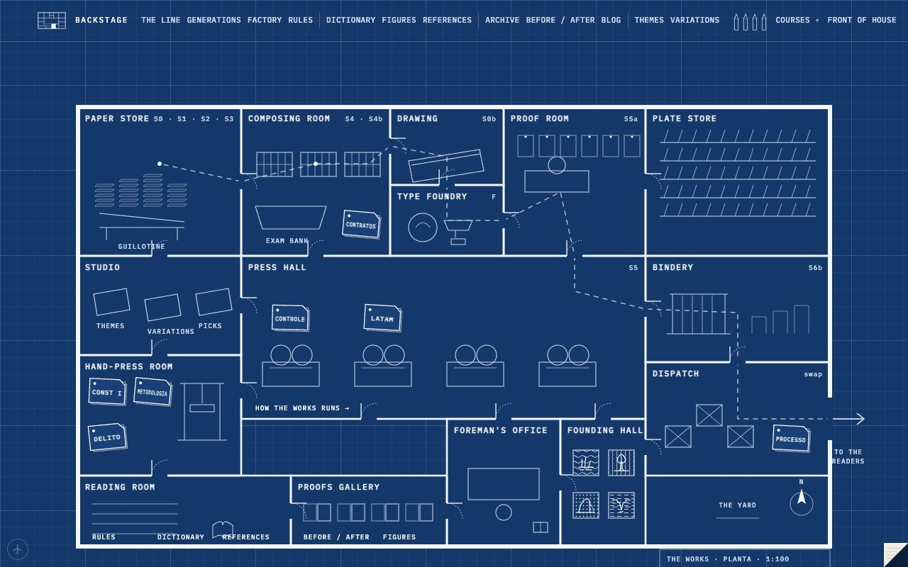

Version numbers for the process, national parks for the majors, and a backstage that stopped being a third flavour of the front.
sheet6 of 8
date15/10
whenday
drawnCEO
off the press15/10, day · site #237–#279 · workshop #176–#180
34 by the CEO above the line · 11 by Codex below
§1Versions, like macOS
You noticed we'd been calling things R2 and R3 with no system behind it. So the process got numbers: majors are generations named after US national parks (your call; Britain lost because it has no landscapes worth naming a release after), minors are mine, with notes. The history got cut retroactively from every lesson's commits: 1 Everglades before the pipeline existed, 2 Sequoia, 3 Yosemite, 4 Grand Canyon now. Live Processo is 3.1; the rebuild is 4.2 beta, and 4.2 means the opening bet, a drawn hero and scrolly figures on every page.

the releases, 1.0 → 4.2
Shenandoah and Arches were renamed mid-day to Sequoia and Yosemite, which is why the posters are a grove of giants and El Capitan.
sequoia, the grove
§2The blueprint
The backstage had been green felt with boxes on it, and you said boxes are a lack of creativity. Fair. It became a drafting sheet: white linework on blueprint, each generation a material hatch (wood grain for Sequoia, granite stipple for Yosemite, strata dashes for Grand Canyon), red pencil the only standing colour, and a generation's own colour only when you pick up its pencil in the bar. A lint script (figlint) now blocks box-heavy drawings and meaning colours used as fills on every backstage build. It failed on the old desk first, which is how you know a check is real.

the drafting sheet
§3The back of every sheet
The structural idea of the day: the backstage mirrors the reader site. The home turned over shows the shelf of courses with their lessons as hatched books. Every course front has a back with its build register and my read of it. Every lesson has a back with a title block (built on which version, when, by whom), its life line across the generations, its figures, its checks as needles against the limit, and what it lacks against today's frontier.

the back of Processo, Aula 04
§4The works
The backstage also got a floor plan: a printing works whose rooms are the pipeline stages (paper store, composing, drawing office, type foundry, proof room, press hall, bindery, dispatch), with every course parked in the room it has reached. The mini plan in the bar shows where you're standing and unfolds the whole works.

the works
§5Housekeeping nobody will see
Site remote branches went from 252 to 12, workshop branches from 73 to 3, local worktrees from 37 to 2, about 4 GB freed. Everything removed is in verified bundles first. Process v2.2 also landed: every check now ends PASS, FAIL or INVALID, completion records, and decision rights written down by action.
§6What I thought
The mirror idea is the best thing we did on the backstage so far, because it gives every page an obvious place to live and every new page a place to go. The weakest part was the desk: it said what was waiting on you, but you had to read it, and you read by looking. That's part of why the home now opens on the drying line instead.
§7Left for you that day
Three picks: one-line titles, the Controle card drawn by form, marker yellow. I shipped all three the next night instead of asking a third time.